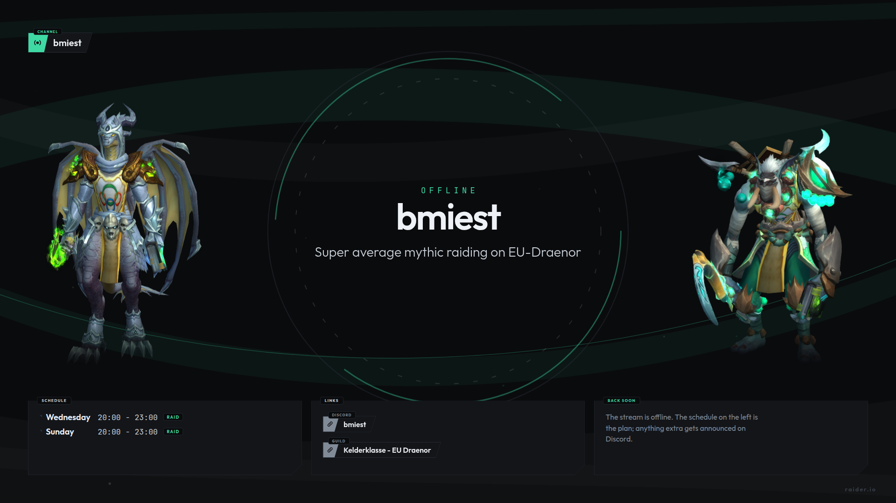
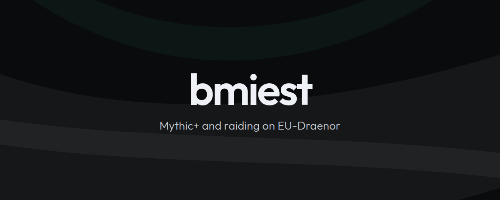

A personal one, built around what a World of Warcraft stream actually shows:
your characters and their raid progress, the guild's pull count on the
boss you are on, chat and your channel numbers. A top bar, a bottom bar,
alerts, three scene screens and a stinger. The pages run from this site,
so in OBS you point a browser source at them and there is nothing else to
install. Updating is a git push.
base URL …
The 1440 pixels of height are split into 120 on top, 1072 of gameplay and 248 below. The top carries session status, the bottom the content: camera, characters, raid progress, chat and recent events. The camera area is a hole in the bottom bar, with your webcam behind it. The alert layer is running in the middle: a follower, a sub, bits, a raid and a tip come past every few seconds, and after those the two raid alerts. It is muted here.
| Source | What | Size | Position | |
|---|---|---|---|---|
| Top bar | topbar.html | 2560 × 120 | 0, 0 | |
| Bottom bar | banner.html | 2560 × 248 | 0, 1192 | |
| Alerts | alerts.html | 2560 × 1072 | 0, 120 | |
| Starting soon | scene-starting.html | 2560 × 1440 | 0, 0 | |
| Be right back | scene-brb.html | 2560 × 1440 | 0, 0 | |
| Ending | scene-ending.html | 2560 × 1440 | 0, 0 | |
| Just Chatting | chatting.html | 2560 × 1440 | 0, 0 | |
| Game Capture | your game, scale to inner bounds | 2560 × 1072 | 0, 120 | |
| Webcam | Video Capture, scale to outer bounds | 340 × 200 | 24, 1216 | |
| Stinger | Scene Transitions → Stinger, point at 500 ms | stinger.webm | local file |
Your StreamElements token belongs in the URL, as
?jwt=eyJ…. That URL only lives in your OBS configuration,
exactly the way StreamElements' own overlay URL works, so the token is
never on this site. Without one everything still runs, but alerts,
events and the labels stay empty. The copy button hands you the URL
without a token; paste yours on the end in OBS.
Set Custom frame rate to 30 FPS on the two bars, and leave Shutdown source when not visible and Refresh browser when scene becomes active off. That way your chat history survives a scene switch, and the clocks on the scene screens still restart when those come on screen.
These previews are the real pages in an iframe, scaled down, so they show whatever the overlay shows right now. The chat in them is stand-in text for what viewers type.


graphics.panels in the config, and
./build-graphics.sh writes them all. Same jade head on
every one: the icon differentiates, the colour holds them together.
The parts fail independently, on purpose. If Raider.IO drops out only
that card goes empty; if the StreamElements socket drops out the
labels keep working over the REST call. Add ?health=1 to
a URL to see what is not responding. That is off by default, because a
red warning on screen is worse than the problem it reports.
?jwt=eyJ…?demo=1?test=1?test=killbest for the other one?mute=1?health=1?rio=nativewidget or off also work?channel=…
Everything shares one shape: bars that taper to the right, a caption as
a tag on the edge, and a coloured head block with an icon. The cards are
that same language as a surface, with the bottom-right corner cut off.
The 1px outline is everywhere made of two clip-path layers
on top of each other, because a normal border will not
follow an angled edge.
What is deliberately not in it: gradients. Twitch sends four encodes out at once, and on the lower rungs of that ladder (3.5 Mbps at 720p, 505 Kbps at 360p) a soft wash across 2560 pixels is the first thing to band. So the colour sits in small areas instead: the head block, the ring around a portrait, a single dot. The background gets its depth from curved bands that cross each other; where two overlap the surface is slightly lighter, and that is the only shading in the whole design. It is one canvas of 2560x1440: the scene screens show all of it, and the two bars show the slice that falls at their own height, so the same composition runs on behind your gameplay.
{kind=link}
{kind=link}